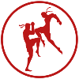

Привет участникам соревнований! |
|
Виды спорта: |
K1K-1 — японская компания, основанная в 1993 (и закрытая в 2018 году) последователем каратэ-кёкусинкай Кадзуёси Исии и занимавшаяся организацией и промоушеном кикбоксерских поединков. Компания проводит ежегодные турниры в тяжёлом весе (1993—2010, 2012), полутяжёлом весе (1993—1995), втором среднем весе (1995), первом среднем весе (2002—2010, 2012), втором полусреднем весе (2014), первом полусреднем весе (2010—2011), лёгком весе (2015), полулёгком весе (1997), юношеские турниры, а также внетурнирные бои, учредила чемпионские титулы в категориях до 100 кг и свыше 100 кг.К-1 была ведущей организацией в «японском» кикбоксинге, выведя его в лидеры профессиональных единоборств наряду с профессиональным боксом и смешанными единоборствами. Сам «японский» кикбоксинг фактически ассоциировали с К-1, с 2000-х годов термин К-1 стал чаще официально использоваться как название разновидности кикбоксинга (например, в ведущей любительской федерации WAKO).Турниры вызывали большой ажиотаж зрителей. Рекорд посещаемости был установлен 7 декабря 2002 года — на стадионе Tokyo Dome собралось 74 500 любителей единоборств.[1] В 2002 году начали проводиться турниры в средней весовой категории - К-1 World Max. В 2011 году концерн FEG (Fighting and Entertainment Group), в собственности которого находилась К-1, обанкротился, в связи с чем проведение турниров было временно прекращено. В 2012 году К-1 была возрождена новыми собственниками, однако утратила статус наиболее престижной организации в кикбоксинге после перехода большинства ведущих бойцов в голландскую Glory WS. |
Главное не победа, а участие! |
|